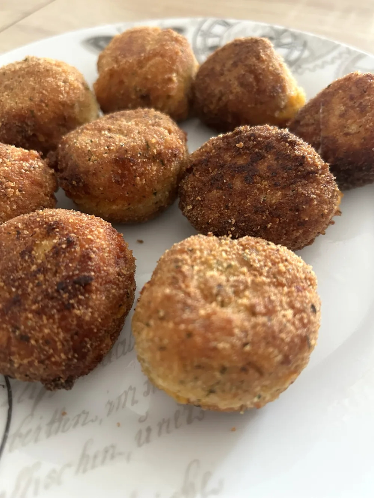

Bombas de calabaza y queso con jamón
Una capa dorada y crujiente esconde una mezcla suave de calabaza cocida, queso rallado y taquitos de jamón. Se pueden preparar en sartén o en air fryer.
- Cocción
- Sartén o air fryer
- Raciones
- Sin especificar
- Dificultad
- Fácil

Ingredientes
Sin cantidades ni raciones especificadas
Marca lo que ya tienes.
La receta de origen no indica cantidades exactas: ajusta la harina a la consistencia de la masa.
Preparación paso a paso
- Cuece la calabaza hasta que esté muy blanda. Escúrrela bien y aplástala hasta formar una masa sin exceso de agua.
- Mézclala con el queso rallado y los taquitos de jamón. Añade un poco de harina y las especias que prefieras.
- Remueve hasta obtener una mezcla que puedas moldear. Si queda demasiado húmeda, incorpora un poco más de harina, sin pasarte.
- Forma bolitas con las manos, del tamaño que prefieras.
- Bate el huevo y pasa cada bolita primero por el huevo y después por el pan rallado.
- Si las haces en sartén, calienta aceite y fríelas, girándolas, hasta que estén doradas. Déjalas escurrir al retirarlas.
- Como alternativa, si utilizas air fryer, coloca las bombas sin amontonarlas, añade un poco de aceite y cocínalas hasta dorarlas, girándolas para conseguir una cocción uniforme.
- Sírvelas recién hechas, con el rebozado crujiente.
UN POCO DE OFICIO
Para que te salgan bien
El punto clave es escurrir la calabaza
Una calabaza con demasiada agua impide formar las bombas. Incorpora la harina poco a poco y detente cuando la mezcla se pueda moldear. La sartén y la air fryer son dos opciones distintas: no hay que cocinar las bombas en ambas.
MÁS SOBRE ESTA RECETA
↑ Volver a la recetaQué hacer con calabaza cocida: unas bombas crujientes
La textura marca la diferencia en esta receta. La calabaza cocida debe estar muy blanda, pero también bien escurrida: así se mezcla con el queso y el jamón sin convertirse en una pasta demasiado líquida.
La harina, poco a poco
La harina no tiene una cantidad fija porque la humedad de la calabaza puede variar. Añádela poco a poco, solo hasta que puedas formar bolitas. Después llega el rebozado de huevo y pan rallado, que ayuda a conseguir el exterior crujiente.
Elegir entre sartén o air fryer
Puedes elegir sartén o air fryer según te resulte más cómodo. En ambos casos, lo importante es cocinar las bombas hasta que queden doradas y servirlas recién hechas.
La receta original no especifica cantidades exactas, número de raciones, temperatura ni tiempos de cocción. No se han añadido valores estimados.
Otras recetas que te pueden gustar
Más tapas y entrantes
Bizcocho jugoso de calabaza y almendras
Bizcocho tierno de calabaza y almendras, con canela y una miga jugosa.
Boniato al horno con ajo, pimentón y romero
Boniato en dados con ajo, pimentón y romero: una guarnición al horno sencilla.
Croquetas de jamón
Croquetas clásicas de jamón con bechamel cremosa y rebozado crujiente.
Opiniones sobre esta receta
Consultando valoraciones…